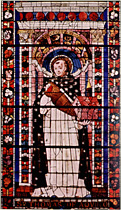

|  |
|---|
[86779] Ecce Rex, pars 1 Ecce rex tuus venit tibi mansuetus. Multa sunt mirabilia divinorum operum. Psalmus: mirabilia opera tua. Sed nullum opus Dei est ita mirabile sicut adventus Christi in carnem, et est ratio quia in aliis Dei operibus Deus impressit suam similitudinem creaturae, sed in opere incarnationis impressit Deus seipsum et univit se naturae humanae in unitate personae vel univit nostram naturam sibi; et ideo cum alia Dei opera non sint perfecte scrutabilia, illud opus, scilicet incarnationis, est omnino supra rationem. Unde Job: qui facis magna et mirabilia et discrutabilia absque numero. Unum opus est quod videre non possum: si venerit ad me non videbo eum. Et in Malachia: ecce venit dominus exercituum et quis poterit cogitare diem adventus ejus? Quasi dicat quod illud excedit cognitionem humanam. Sed apostolus docet quis poterit cogitare diem adventus ejus dicens: non sumus sufficientes cogitare aliquid a nobis quasi ex nobis, sed omnis sufficientia nostra ex Deo est. Igitur in principio rogabimus dominum ut ipse det mihi aliquid dicere et cetera.
[86780] Ecce Rex, pars 2 Ecce rex tuus et cetera. Verba ista sumuntur ex Evangelio quod hodie apud nos legitur et sunt sumpta de Zacharia, licet aliquantulum sub aliis verbis ibi recitentur. In verbis autem istis manifeste praenuntiatur nobis Christi adventus. Ne super ambiguo procedamus, scire debetis quod quadruplex legitur Christi adventus. Primus est quo venit in carnem. Secundus ejus adventus est quo venit in mentem. Tertius Christi adventus est quo venit in morte justorum. Sed quartus Christi adventus est quo venit ad judicandum. Primo dico adventus Christi est in carnem. Et non est intelligendum quod venerit in carnem mutando locum, quia dicit in Jeremia: coelum et terram ego impleo. Quomodo ergo venit in carnem? Dico quod venit in carnem descendens de coelo, non dereliquendo coelum, sed assumendo nostram naturam. Unde in Johanne: in propria venit. Et quomodo dico quod erat in mundo? Quando verbum caro factum est. Et videte quod iste adventus inducit alium Christi adventum qui est in mentem. Nihil prodesset nobis quod Christus venisset in carnem nisi cum hoc venisset in mentem scilicet nos sanctificando. Unde in Johanne: si quis diligit me sermonem meum servabit et pater meus diliget eum et ad eum veniemus et mansionem apud eum faciemus. In primo adventu venit solum filius. In secundo adventu venit filius cum patre ad inhabitandum animam. Per istum adventum qui est per gratiam justificantem, anima liberatur a culpa, non ab omni poena, quia confertur gratia, sed nondum confertur gloria, et propter hoc necessarius est tertius Christi adventus quando ipsos recipit ad seipsum. Unde in Johanne: si abiero, in passione, et paravero vobis locum, tollendo obstaculum, iterum veniam ad vos, scilicet in morte, et tollam vos ad meipsum, scilicet in gloria, ut ubi sum ego illic et vos sitis. Item in Johanne dicit: ego veni ut vitam habeant, scilicet praesentiam in animabus, et abundantius habeant, scilicet per gloriae participationem. Quartus Christi adventus erit ad judicandum, scilicet quando dominus veniet ad judicium, et tunc gloria sanctorum redundabit usque ad corpus et resurgent mortui. Unde in Johanne: venit hora et nunc est quando omnes quis sunt in monumentis audient vocem filii Dei et procedent qui bona egerunt in resurrectionem vitae. Et propter istos quatuor Christi adventus celebrat forte Ecclesia quatuor dominicas de Christi adventu. In ista autem dominica celebrat de primo Christi adventu, et possumus in verbis propositis quatuor videre: primo adventus Christi demonstrationem ibi: ecce; secundo venientis conditionem ibi: rex tuus; tertio venientis utilitatem: venit tibi, quarto veniendi modus ibi: mansuetus. Primo dico possumus videre adventus Christi demonstrationem ibi: ecce. Et notandum quod per ecce quatuor solemus intelligere: primo rei certificationem: de rebus quae nobis constant dicimus: ecce; secundo intelligimus per ecce temporis determinationem; tertio rei manifestationem, et quarto hominum confortationem. Primo dico per ecce solemus intelligere rei certificationem. Quando aliquis vult certificare dicit: ecce. Unde in Genesi dicit dominus: ecce statuam pactum meum vobiscum et cum semine vestro post vos. Arcum meum ponam inter me et vos scilicet in signum pacis. Per arcum istum significatur Dei filius, quia sicut arcus generatur ex reverberatione solis ad nubem aquosam, sic Christus generatus est ex verbo Dei et ex natura humana quae est sicut nubes, et sicut anima et caro unus est homo, ita Deus et homo unus est Christus; et de Christo dicitur quod ascendit super nubem levem, id est super naturam humanam sibi eam uniendo. Et venit nobis Christus in signum pacis, et fuit necessarium quod ita fieret quia modo sunt aliqui qui dubitant de secundo Christi adventu. Unde apostolus: in novissimis quidem temporibus venient illusores discedentes a fide, juxta proprias concupiscentias ambulantes et dicentes: ubi est nunc promissio et adventus ejus. Dicent enim tales quod anima non erit post corpus, et propter hoc ad certificationem adventus Christi dicit propheta: ecce et cetera. Et in Habacuc: apparebit dominus in finem et non mentietur. Et Isaias: dominus exercituum veniet. Secundo per ecce solemus intelligere temporis determinationem. In adventu Christi ad judicium non est nobis tempus determinatum. Unde Job: nescio quamdiu subsistam et quando tollet me factor meus. Et in Luca: regnum Dei non veniet cum observatione. Et quare non fuit in isto adventu tempus nobis determinatum? Forte quia dominus voluit nos esse semper vigilantes. Sed in adventu Christi in carnem fuit nobis tempus determinatum. Unde Jeremias: ecce dies venient et suscitabo David germen justum et regnabit et sapiens erit. Tertio per ecce solemus intelligere rei manifestationem. Quidam adventus Dei ad nos est occultus, scilicet adventus quo venit in mentem, et iste non potest sciri per certificationem. Unde Job: si venerit ad me non videbo eum et si abierit non intelligam. Sed in adventu in carnem Christus manifestus et visibilis venit. Unde Isaias: propter hoc intelliget populus meus nomen meum, quia ego ipse qui loquebar ecce adsum. Et Johannes digito eum demonstravit ut praesentem dicens: ecce agnus Dei. Zacharias vero demonstravit eum per ecce ut futurum. Quarto per ecce solemus intelligere hominum confortationem et hoc in duobus. Si homo patitur molestias ab inimicis suis et inimici ejus subjuguntur ei, dicit: ecce. Unde in threnis: aperuerunt inimici mei os suum, en venit dies quam desideravi. Similiter quando homo consequitur ecce dicit. Unde Psalmus: ecce quam bonum et quam jucundum habitare fratres in unum et cetera. Ista duo consecuti sumus in adventu Christi quia liberatus est homo de insultibus Daemonum et gaudet de spe adepta. Isaias: dicite pusillanimis confortamini; nolite timere: ecce Deus vester ultionem adducet de inimicis vestris, ipse veniet et salvabit vos. Videamus modo de conditione advenientis. Adventus personae requiritur, expectatur vel praenuntiatur cum solemnitate propter personae magnitudinem, si est rex vel legatus domini Papae, vel propter amicitiam et affinitatem; et iste qui venit est rex et propinquus noster et amicus. Propter hoc cum solemnitate ipsum expectare debemus. Scitis quod rex imperat auctoritate dominii, sed non quicumque habet auctoritatem dominii dicitur rex, sed requiruntur quatuor ad hoc quod aliquis dicatur rex, quorum si aliquid defuerit non dicitur rex. Debet enim rex habere primo unitatem, secundo plenariam potestatem, tertio amplam jurisdictionem et quarto justitiae aequitatem. Primo dico rex debet habere unitatem, quia si in regno fuerint plures dominantes et non pertineat dominium ad unum, non dicitur rex. Unde regnum est sicut monarchia quaedam et Christus habet unitatem. Unde in Ezechiele: rex unus erit omnium nostrum. Dicit rex unus ad significandum quod non alienus, non alius dominus, sed unus dominus filius cum patre erit rex noster. Unde dicit Christus: ego et pater unus sumus quod est contra Arium qui dixit quod alius esset pater, alius filius. Apostolus: et si dii multi et domini multi, nobis unus Deus et dominus est. Secundo rex importat plenitudinem potestatis. Qui principaretur non cum plenitudine potestatis sed secundum leges impositas non diceretur rex sed consul vel potestas. Futurum autem erat ut Christo veniente, lex a Deo mutaretur quantum ad leges caeremoniales. Unde ipse Christus est qui potest legem condere. Unde dicit: dictum est antiquis: non occides; ego autem dico, quasi dicat: habeo potestatem et possum leges condere. Unde Isaias: dominus judex noster, legifer noster, ipse veniet et salvabit nos. Legitur quod pater omne judicium filio dedit, et dominus est legifer noster et per consequens rex noster. Unde in Esther: domine rex omnipotens, in ditione tua cuncta posita sunt. Unde dicit filius: data est mihi omnis potestas in coelo et in terra. Tertio rex importat amplitudinem jurisdictionis. Paterfamilias habet plenitudinem potestatis in domo sua, non tamen dicitur rex. Similiter qui habet villam unam non propter hoc dicitur rex, sed qui habet dominium super multas terras et super civitatem magnam, talis dicitur rex. Illud videmus in isto qui venit nobis quia omnis creatura est ei subdita, quia rex omnis terrae Deus, et oportuit quod talis veniret qui talem potestatem haberet, quia olim lex fuit solum data Judaeis et dicebantur Judaei populus peculiaris Dei, sed oportuit omnes adduci ad salutem, ideo oportuit quod esset rex omnium qui omnes posset salvare. Talis fuit iste qui venit nobis. Unde Psalmus: postula a me et dabo tibi gentes hereditatem tuam et possessionem tuam terminos terrae. Quarto oportet quod rex habeat aequitatem quia aliter esset tyrannus, quia tyrannus omnia quae sunt in regno convertit ad suam utilitatem; sed rex regnum suum ordinat ad bonum commune. Unde in proverbiis: rex justus erigit terram, vir avarus destruit eam. Sed iste venit non quaerens utilitatem propriam sed tuam, quia non venit filius hominis ministrari, sed ministrare. Et qui venit ministrare certe venit animam suam dare in redemptionem multorum, et ut redemptos duceret ad gloriam aeternam ad quam nos perducat et cetera.
[86781] Ecce Rex, pars 3 Ecce rex tuus venit et cetera. Dictum fuit quod in verbis istis possumus videre adventus demonstrationem cum dicit: ecce; secundo adventus utilitatem ibi venit; tertio et quarto modum veniendi ibi: mansuetus. Dictum etiam fuit quod per hoc quod dico: ecce, quatuor solemus intelligere: primo rei certificationem, secundo temporis determinationem, tertio rei manifestationem et quarto confortationem. De conditione etiam advenientis, quae notatur cum dicit rex tuus, dictum fuit quod adventus personae requiritur, expectatur vel annuntiatur cum solemnitate propter ejus magnitudinem si est rex vel legatus vel propter personae amicitiam et affinitatem, et ista fuerunt in isto qui venit. Considerandum autem quod ipse est rex universae creaturae. Unde in Judith: creator aquarum et rex universae creaturae, specialiter autem dicitur rex tuus, scilicet hominis propter quatuor: primo propter imaginis suae similitudinem, secundo propter specialem dilectionem, tertio propter specialem curam et sollicitudinem et quarto propter naturae humanae societatem. Primo dico Christus dicitur rex tuus, id est hominis, propter imaginis suae similitudinem. Scitis quod specialiter ad regem pertinere dicuntur qui insignia regis portant quasi ejus imaginem, et cum omnis creatura Dei sit, specialiori tamen modo creatura Dei dicitur qui imaginem Dei portat, et hic est homo. Unde in Genesi: faciamus hominem ad imaginem, et similitudinem nostram. In quo consistit ista similitudo? Dico quod non attenditur secundum similitudinem corporalem, sed secundum intelligibile lumen mentis. In Deo autem est fontalitas intelligibilis luminis et nos habemus signum hujus luminis. Unde Psalmus: signatum est super nos lumen vultus tui domine. Lucis hujus habet homo sigillum, unde in homine creata est ista imago sed contingit quod derugatur et obscuratur per peccatum. Psalmus: et imagines eorum ad nihilum rediges. Propter hoc misit Deus filium suum ut imaginem istam per peccatum deformatam reformaret. Studemus igitur reformari secundum apostolum qui dicit: exuentes veterem hominem induite novum hominem qui secundum Deum creatus est et qui renovatur in imagine ejus qui creavit eum. Et quomodo renovamur? Certe quando imitamur Christum. Ista autem imago quae in nobis est deformata, in Christo est perfecta. Debemus igitur imaginem Christi portare. Unde apostolus ad Corinthios: sicut portavimus imaginem terreni, ita portemus imaginem coelestis et in epistola hodierna: induimini Christum, id est imitamini Christum. In hoc consistit perfectio vitae Christianae. Secundo dicitur Christus rex tuus, id est hominis, propter specialem amorem. Consuetum est in collegio quando episcopus diligit aliquos specialiori modo quam alios quod dicitur episcopus eorum. Deus diligit omnia quae sunt, sed specialiori modo diligit homines. Unde Isaias: ubi est zelus tuus et fortitudo tua, multitudo viscerum tuorum super me. Videte quod specialiter diligit Deus naturam humanam. Invenimus enim diversos gradus naturae, sed non invenimus quod Deus gradum inferioris naturae transferat in gradum superioris naturae ut gradum stellae in gradum solis, vel gradus inferiorum Angelorum in gradus superiorum Angelorum; sed hominem Deus transtulit in gradum et equalitatem Angelorum. Unde in Luca: filii resurrectionis, sancti, equales erunt Angelis. Deus igitur dilexit homines specialiter. Igitur non debemus esse ingrati tantae dilectioni, sed debemus nostrum amorem totaliter in ipsum transferre. Si diligeret aliquem pauperem, miserum se reputaret ille pauper si non recompensaret regi amorem suum pro posse suo. Dominus ex infinitate amoris ad hominem dixit: deliciae meae sunt esse cum filiis hominum. Ergo debemus ei recompensare amorem istum. Tertio dicitur Christus rex tuus, id est hominis, propter singularem curam et sollicitudinem. Verum est quod Deus habet curam de omnibus. Unde XII libri sapientiae: est ei cura de omnibus. Non est res ita parva quod subtrahatur a divina providentia, quia sicut res est a Deo, ita et ordo est a Deo, et providentia idem est quod ordo. Specialiter autem homines subduntur divinae providentiae. Unde Psalmus: homines et jumenta salvabis domine, scilicet salute corporali, filii hominis in tegmine alarum tuarum sperabunt. Et quomodo sperant? Dico quod non solum spiritualia bona, immo etiam aeterna praeparantur eis a Deo quos perducit ad vitam aeternam, et quantum ad hoc non est Deo cura de aliis. Unde apostolus: non est Deo cura de bobus. Deus actum hominis non permittit indiscussum. Unde in libro sapientiae: tu autem dominator peccatum cum magna tranquilitate judicas. Quarto dicitur Christus rex tuus, scilicet hominis, propter naturae humanae societatem. Unde in Deuteronomio: non poteris alterius gentis regem facere qui non sit frater tuus. In hac enim prophetia de Christo dominus disponebat quod hominibus regem constitueret. Noluit quod esset alterius gentis, id est alterius naturae, qui non esset frater noster. Unde apostolus dicit de Christo: nunquam Angelos apprehendit, sed semen Abrahae, in quo videtur homo habere privilegium super Angelos. Christus rex est Angelorum, et est homo, non Angelus. Angeli etiam serviunt homini. Unde apostolus: omnes sunt administratorii spiritus. Oportuit etiam quod Christus esset homo ad hoc quod salvaret quia dicit apostolus ad Hebraeos: qui sanctificat et sanctificatur ex uno sunt, propter quod compungitur nos fratres dicens: narrabo nomen meum fratribus meis. Patet modo de adventus demonstratione et advenientis conditione. Sequitur videre advenientis utilitatem, quae notatur cum dicit: venit tibi; scilicet non compulsus propter suam utilitatem, sed propter nostram. Venit autem propter quatuor: primo venit ad manifestandam divinam majestatem, secundo ad reconciliandum nos Deo, tertio ad liberandum nos a peccato, et quarto ad donandum nobis vitam aeternam. Primo dico venit Christus ad manifestandam nobis divinam majestatem. Homo maxime desiderat habere cognitionem veritatis, et praecipue veritas considerata est de Deo. Homines autem in tanta erant ignorantia quod ignoraverunt quod esset Deus. Aliqui dicebant quod esset corpus, alii dixerunt quod non habebat curam de singulis, et ideo venit filius Dei ut nos veritatem doceret. Unde dicit: in hoc natus sum, ad hoc veni in mundo ut testimonium perhibeam veritati. Et in Johanne: Deum nemo vidit unquam, et propter hoc filius Dei venit ut tu veritatem cognosceres. Parentes nostri in tanto errore fuerunt quod divinam veritatem ignoraverunt. Sed nos per adventum filii Dei reducti sumus ad veritatem fidei. Secundo venit Christus ad reconciliandum nos Deo. Poteras dicere: Deus erat mihi inimicus propter peccatum; melius igitur fuit mihi ipsum ignorare quam cognoscere. Propter hoc venit Christus non solum ad manifestandum nobis divinam majestatem, sed ad reconciliandum nos Deo. Unde apostolus ad Ephesios et veniens evangelizabit pacem iis qui prope et iis qui longe sunt. Et alibi dicit apostolus: reconciliati sumus Deo per mortem filii ejus et propter hoc in nativitate Christi cantabant Angeli: gloria in excelsis Deo, et post resurrectionem dominus portavit pacem discipulis suis dicens: pax vobis. Tertio venit ut nos a servitute peccati liberaret. Unde apostolus: Jesus Christus venit in mundum peccatores salvos facere. Qui facit peccatum servus est peccati, indiget dicitur: si filius vos liberaverit, vere liberi eritis. Et: filius hominis venit quaerere et salvum facere quod perierat. Quarto venit Christus ut in praesenti nobis daret vitam gratiae et in futuro vitam gloriae. Unde in Johanne: ego veni ut vitam habeant, scilicet vitam gratiae in praesenti, et quia justus ex fide vivit et abundantius habeant, scilicet vitam gloriae in futuro per caritatem. Unde in Johanne: nos scimus quia translati sumus de morte ad vitam quia diligimus fratres, et vivamus per bona opera. Item in Johanne: haec est vita aeterna ut cognoscant te Deum verum et quem misisti Jesum Christum. Patet modo de advenientis utilitate. Sed quomodo venit? Dico quod venit mansuetus hoc est multum. Unde in proverbiis: sicut fremitus leonis, ita et ira regis et hilaritas ejus sicut ros super herbam. Mansuetudo est ira mitigata. Modo Deus venit cum mansuetudine, sed in futuro veniet cum ira. Unde Isaias: ecce nomen domini veniet de longinquo quasi ardens furor ejus. Job: nunc enim non infert furorem nec ulciscitur zelus valde. Modo enim venit Christus cum mansuetudine et nos cum mansuetudine debemus ipsum recipere. Unde beatus Jacob: in mansuetudine suscipite insitum verbum quod salvare potest animas vestras. Videte mansuetudinem Christi possumus considerare in quatuor: primo in ejus conversationem, secundo in ejus correctionem, tertio in ejus gratiosam hominis susceptionem, et quarto in ejus passionem. Primo dico possumus videre mansuetudinem Christi in ejus conversationem quia tota conversatio ejus pacifica fuit; non quaesivit jurgiorum materias, sed omnia vitavit quae litem poterant inducere. Unde dixit: discite a me quia mitis sum et humilis corde. Et in hoc debemus ipsum imitari. Christus ascendens Jerosolymam sedit super asinum qui est animal mansuetum, non super equum, et fuit filius subjugalis. Debemus igitur esse mansueti. Unde in Ecclesiastico: fili in mansuetudine perfice opera tua et super hominum gloriam dirigeris. Item apparet mansuetudo Christi in ejus correctionem. Multa opprobria a persecutoribus suis sustinuit, non tamen cum ira aut jurgio eis respondebat. Super illud: propter veritatem et mansuetudinem et cetera. Dicit Augustinus in expositione quod cum Christus loqueretur, veritas agnoscebatur; cum inimicis patienter respondebat, mansuetudo laudabatur. Psalmus: supervenit mansuetudo et corripiemur. Isaias: non contendit neque clamabat. Tertio apparet mansuetudo Christi in gratiosa hominum susceptione. Aliqui homines nesciunt recipere cum mansuetudine. Sed Christus peccatores benigne recipiebat et cum eis comedebat et ipsos ad sua convivia admittebat vel ad eorum convivia ibat, ita quod mirabantur Pharisaei dicentes: quare magister vester manducat cum publicanis. Fuit igitur mansuetus. Unde potest dicere de ipso Ecclesia illud II regum: mansuetudo tua multiplicavit me. Igitur qui alios habent regere debent esse mansueti. Quarto apparet mansuetudo Christi in ejus passione quia tamquam agnus ad passionem ivit et cum malediceretur non maledicebat; omnes tamen poterat morti tradere. Unde dicit in Jeremia: ego quasi agnus qui portatur ad victimam. In mansuetudine vero bene imitatus est ipsum beatus Andreas qui cum positus esset in cruce et populus ipsum vellet deponere de cruce precibus obtinuit et rogavit ne ipsum de cruce deponerent, sed quod ipsi per passionem sequerentur ipsum. Unde impletum est in ipso: vir iste mitissimus in populo apparuit. Mansuetudo facit hereditare terram beatam. Unde in Matthaeo: beati mites quoniam ipsi hereditabunt terram, quod nobis praestare dignetur qui cum Deo patre et spiritu sancto et cetera.